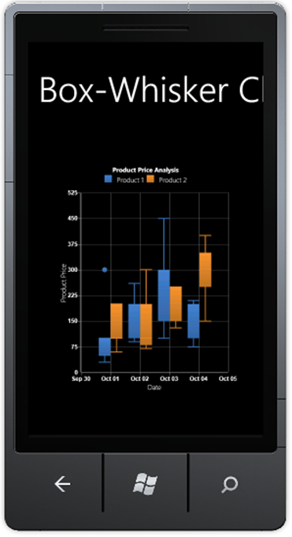

Box and Whisker chart is a method for displaying a five-number data summary. The graph is called a Box and Whisker plot (also known as BoxPlot) and summarizes the following statistical measures. It covers median, upper and lower quartiles (75 percentile to 25 percentile) and Minimum Maximum Data values.
The following code snippets illustrate how to create a Box and Whisker Chart.
|
[XAML]
<syncfusion:ChartSeries EnableEffects="True" Type="BoxAndWhisker" Label="Product 1" StrokeThickness="2" syncfusion:ChartDoughnutType.DoughnutCoefficient="0.5" DataSource="{StaticResource data1}" BindingPathX="StockDate" BindingPathsY="MaxStockPrice, MinStockPrice, OpenPrice, ClosePrice, PurchasePrice"> </syncfusion:ChartSeries>
<syncfusion:ChartSeries EnableEffects="True" Type="BoxAndWhisker" Label="Product 2" StrokeThickness="2" DataSource="{StaticResource data2}" BindingPathX="StockDate" BindingPathsY="MaxStockPrice, MinStockPrice, OpenPrice, ClosePrice, PurchasePrice"> </syncfusion:ChartSeries>
|
|
[C#]
Chart1.Areas[0].Series[0].Type = ChartTypes. BoxAndWhisker; Chart1.Areas[0].Series[1].Type = ChartTypes. BoxAndWhisker;
|

Figure 54: Box and Whisker Chart